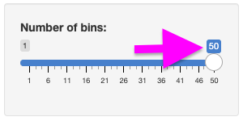
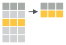
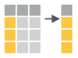
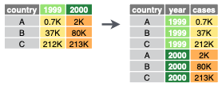

librarian::shelf(
dplyr, DT, ggplot2, leaflet, plotly,
tbep-tech/tbeptools,
shiny, shinydashboard, tidyr)3 Interactive: Shiny apps
Learning Objectives
Use the Shiny framework to develop online interactive applications accepting user input to render outputs from arbitrary R functions. Server requirements differentiating Shiny apps from simpler Quarto docs will be reviewed.
3.1 Install shiny and other R packages
Ensure you have the librarian R package installed. Look in RStudio’s Packages pane and Install if not found when searching for “librarian”. This allows us to use the helper function librarian::shelf() to load the libraries and install if needed:
Note that the tbeptools R package is installed from source on Github given the ‘owner/repository’ naming convention, so tbep-tech/tbeptools has source code at github.com/tbep-tech/tbeptools.
Later we’ll use the simpler base function library() to load the libraries in the Shiny app since when publishing to ShinyApps.io dependent libraries are automatically installed based on using library() (and not librarian::shelf()).
If you did not already have the shiny package installed, you should restart RStudio to use additional menu items for the next step.
3.2 Create your first Shiny app
Let’s create a simple Shiny app starting with the provided default in RStudio by going to the menu File -> New File -> Shiny Web App… and name it faithful (after faithful, the Old Faithful geyser eruption frequency dataset used in this default example):
{kind=link}
For now, let’s go with the default Single File option that puts the entire application in app.R rather than splitting it in two (ui.R/server.R). You should see the following contents in the new file app.R:
Show Code: app.R
#
# This is a Shiny web application. You can run the application by clicking
# the 'Run App' button above.
#
# Find out more about building applications with Shiny here:
#
# http://shiny.rstudio.com/
#
library(shiny)
# Define UI for application that draws a histogram
ui <- fluidPage(
# Application title
titlePanel("Old Faithful Geyser Data"),
# Sidebar with a slider input for number of bins
sidebarLayout(
sidebarPanel(
sliderInput("bins",
"Number of bins:",
min = 1,
max = 50,
value = 30)
),
# Show a plot of the generated distribution
mainPanel(
plotOutput("distPlot")
)
)
)
# Define server logic required to draw a histogram
server <- function(input, output) {
output$distPlot <- renderPlot({
# generate bins based on input$bins from ui.R
x <- faithful[, 2]
bins <- seq(min(x), max(x), length.out = input$bins + 1)
# draw the histogram with the specified number of bins
hist(x, breaks = bins, col = 'darkgray', border = 'white')
})
}
# Run the application
shinyApp(ui = ui, server = server)3.2.1 Run App
Let’s next Run App. Note that you can change the options by clicking on the down triangle next to the button, such as running the app in your default web browser (Run External), a pop-up window or in RStudio’s Viewer Pane.
{kind=link}
This is equivalent to sourcing the app.R file in the R console, including the last line which launches the application after defining the user interface (ui) and server functions (server):
shinyApp(ui, server)Now you can change the values in the slider on the left to change the “Number of bins” (input$bins) and see the updated plot (output$distPlot):
{kind=link}
3.2.2 Understanding reactivity
In Shiny parlance, the histogram plot is reactive to the slider (see Reactivity). Normally when creating web apps, this type of “reactivity” is quite complicated to code, but here by simply using input$bins in the plotting function for the output$distPlot, Shiny registers that this plot needs to be updated when the user changes the input$bins value. Let’s breakdown the sequence of operations to ensure we understand reactivity:
User changes the slider value (e.g., moves from the default value of 30 to max of 50):

This slider was created with the following code:Note that the first argument of
sliderInput()(see?sliderInput()) isinputID, which is the name of the input variable to be used in the server function. In this case, theinputIDis"bins"and the value of the slider is then accessed in the server function withinput$bins. In summary:
sliderInput("bins",...)(in ui.R) becomes →input$bins(in server.R)Shiny registers that the
input$binsvalue has changed and re-runs any functions in server.R that use this value, which in this case isoutput$distPlotdefined by:The updated
output$distPlotfrom server.R is refreshed in the layout of ui.R byplotOutput()since the first argument of this function isoutputIDwhich has the value"distPlot":
{kind=link}
{kind=link}
3.2.3 Run in showcase mode
This default example along with other are made available in the shiny package’s installed folder:
# get path to "examples" under your installation of the Shiny R package
dir_examples <- system.file("examples", package="shiny")
# get all directories listed there
dirs_examples <- list.dirs(dir_examples, recursive = F)
# show the folder name only, not the rest of the path preceding (ie dirname())
basename(dirs_examples) [1] "01_hello" "02_text" "03_reactivity" "04_mpg"
[5] "05_sliders" "06_tabsets" "07_widgets" "08_html"
[9] "09_upload" "10_download" "11_timer" Another way to launch a shiny app is using runApp() on a directory, like…
# set directory to 01_hello app, aka the simplest default faithful app
dir_app <- file.path(dir_examples, "01_hello")# run the app
shiny::runApp(dir_app)Note that this example runs a similar Old Faithful app in a different location with an extra display on the right side highlighting the code that executes as you interact with the user interface.
{kind=link}
{kind=link}
Tip: enable Rainbow Parentheses in RStudio
The more you develop Shiny apps, the more you’ll appreciate Rainbow Parentheses in RStudio. This feature is disabled by default. To enable: visit the menu Tools > Global Options, select Code > Display, and check the box next to Rainbow Parentheses.

Then…

3.3 Create a complex Shiny app
In this next more complicated app we’ll create an interactive time series plot and map. Users can select a station from a drop-down menu and see the time series for any of the available indicators from another drop-down selection. The map will show the location of the selected station.
{kind=link}
Here is the full set of expandable code for the app:
Show Code: wq/app.R
# Goal: Create an app to show a time series by station and indicator.
# Also show map of stations and selected station.
# global.R ----
# * load libraries ----
library(dplyr)
library(ggplot2)
library(leaflet)
library(plotly)
library(tbeptools)
library(tidyr)
# * prep data ----
d <- epcdata |>
select(
station = epchc_station,
SampleTime,
lat = Latitude,
lon = Longitude,
`Total Nitrogen (mg/L)` = tn,
`Chlorophyll-a (ug/L)` = chla,
`Secchi depth (m)` = sd_m) |>
pivot_longer(
names_to = "indicator",
values_to = "value",
`Total Nitrogen (mg/L)`:`Secchi depth (m)`)
# * data for select ----
stations <- unique(d$station)
indicators <- unique(d$indicator)
locations <- d |>
select(station, lon, lat) |>
unique()
# ui.R ----
ui <- fluidPage(
wellPanel(
h2("Water Quality"),
selectInput("sel_sta", "Station", choices = stations),
selectInput("sel_ind", "Indicator", choices = indicators),
plotlyOutput("tsplot"),
leafletOutput("map") )
)
# server.R ----
server <- function(input, output, session) {
# * get_data(): reactive to inputs ----
get_data <- reactive({
d |>
filter(
station == input$sel_sta,
indicator == input$sel_ind)
})
# * tsplot: time series plot ----
output$tsplot <- renderPlotly({
g <- ggplot(
get_data(),
aes(
x = SampleTime,
y = value) ) +
geom_line() +
labs(y = input$sel_ind)
ggplotly(g)
})
# * map ----
output$map <- renderLeaflet({
# filter locations by station
locs_sta <- locations |>
filter(
station == input$sel_sta)
# create map
leaflet(locations) |>
addProviderTiles(providers$CartoDB.Positron) |>
# add all stations
addLabelOnlyMarkers(
lat = ~lat,
lng = ~lon,
label = ~as.character(station),
labelOptions = labelOptions(
noHide = T,
textOnly = T) ) |>
# add selected station
addCircles(
data = locs_sta,
lng = ~lon,
lat = ~lat,
color = "red",
weight = 20)
})
}
# run ----
shinyApp(ui, server)You might notice the extra four dashes at the end of some of the comments in the code. Adding comments like these allows you to easily navigate to that section of code from the lower-left of the Source pane in RStudio:
{kind=link}
---- in the code, RStudio includes it as a menu item in the lower left of the Source pane to quickly jump to that section in the code. In this case menus are used to indicate content in app.R that might otherwise be split into seperate files: global.R, ui.R and server.R. Then an asterisk prefix * is used to bullet key sections within.In this extended tutorial, we will delve deeper into reactivity, data wrangling with dplyr, and the advantages of using R libraries that wrap JavaScript functionality. We’ll start from the default Shiny application using the Old Faithful Geyser data and transform it into a more complex application.
3.3.1 Prepare data
First, let’s prepare the water quality data for our app from the Tampa Bay Estuary Program R package tbeptools that we’ll install if it’s not already installed on your computer.
library(tbeptools)
epcdata# A tibble: 27,601 × 26
bay_segment epchc_station SampleTime yr mo Latitude Longitude
<chr> <dbl> <dttm> <dbl> <dbl> <dbl> <dbl>
1 HB 6 2023-04-17 10:00:00 2023 4 27.9 -82.5
2 HB 7 2023-04-17 10:15:00 2023 4 27.9 -82.5
3 HB 8 2023-04-17 13:35:00 2023 4 27.9 -82.4
4 MTB 9 2023-04-17 12:14:00 2023 4 27.8 -82.4
5 MTB 11 2023-04-17 10:29:00 2023 4 27.8 -82.5
6 MTB 13 2023-04-17 10:43:00 2023 4 27.8 -82.5
7 MTB 14 2023-04-17 11:33:00 2023 4 27.8 -82.5
8 MTB 16 2023-04-26 09:22:00 2023 4 27.7 -82.5
9 MTB 19 2023-04-26 09:33:00 2023 4 27.7 -82.6
10 LTB 23 2023-04-26 11:43:00 2023 4 27.7 -82.6
# ℹ 27,591 more rows
# ℹ 19 more variables: Total_Depth_m <dbl>, Sample_Depth_m <dbl>, tn <dbl>,
# tn_q <chr>, sd_m <dbl>, sd_raw_m <dbl>, sd_q <chr>, chla <dbl>,
# chla_q <chr>, Sal_Top_ppth <dbl>, Sal_Mid_ppth <dbl>,
# Sal_Bottom_ppth <dbl>, Temp_Water_Top_degC <dbl>,
# Temp_Water_Mid_degC <dbl>, Temp_Water_Bottom_degC <dbl>,
# `Turbidity_JTU-NTU` <chr>, Turbidity_Q <chr>, Color_345_F45_PCU <chr>, …The dataset epcdata (?epcdata for details) is “lazily loaded” as part of the tbeptools R package, available once the package is loaded with library(tbeptools), similar to how faithful (?faithful for details) is automatically available from the base R package datasets.
The dplyr package is the ‘swiss army knife’ (or ‘plyers’) for data wrangling, along with its close cousin tidyr. Let’s look at some basic operations: filtering, selecting, and pivoting. Be sure to reference Posit Cheatsheets like: Data tidying with tidyr :: Cheatsheet and Data transformation with dplyr :: Cheatsheet.
Filter

Reduce rows based on condition(s) that evaluate logically (i.e. True or False)d |> dplyr::filter(station == 8)Select

Reduce columns to only those specifiedd |> dplyr::select( station = epchc_station, SampleTime, lon = Longitude, lat = Latitude)Pivot

Transform the data from wide to long format, or vice versad |> tidyr::pivot_longer( names_to = "var", values_to = "val")
{kind=link}
{kind=link}
{kind=link}
Applying the above concepts, create a new folder, like wq for water quality, and inside file app.R with the following contents:
# * load libraries ----
library(dplyr)
library(tbeptools)
library(tidyr)
# * prep data ----
d <- epcdata |>
select(
station = epchc_station,
SampleTime,
lat = Latitude,
lon = Longitude,
`Total Nitrogen (mg/L)` = tn,
`Chlorophyll-a (ug/L)` = chla,
`Secchi depth (m)` = sd_m) |>
pivot_longer(
names_to = "indicator",
values_to = "value",
`Total Nitrogen (mg/L)`:`Secchi depth (m)`)
d# A tibble: 82,803 × 6
station SampleTime lat lon indicator value
<dbl> <dttm> <dbl> <dbl> <chr> <dbl>
1 6 2023-04-17 10:00:00 27.9 -82.5 Total Nitrogen (mg/L) 0.235
2 6 2023-04-17 10:00:00 27.9 -82.5 Chlorophyll-a (ug/L) 1.5
3 6 2023-04-17 10:00:00 27.9 -82.5 Secchi depth (m) NaN
4 7 2023-04-17 10:15:00 27.9 -82.5 Total Nitrogen (mg/L) 0.284
5 7 2023-04-17 10:15:00 27.9 -82.5 Chlorophyll-a (ug/L) 2.1
6 7 2023-04-17 10:15:00 27.9 -82.5 Secchi depth (m) 1.4
7 8 2023-04-17 13:35:00 27.9 -82.4 Total Nitrogen (mg/L) 0.246
8 8 2023-04-17 13:35:00 27.9 -82.4 Chlorophyll-a (ug/L) 3.2
9 8 2023-04-17 13:35:00 27.9 -82.4 Secchi depth (m) NaN
10 9 2023-04-17 12:14:00 27.8 -82.4 Total Nitrogen (mg/L) 0.183
# ℹ 82,793 more rowsWe additionally need to prepare data for the following elements:
- Stations
List of unique station numbers for selecting from a drop-down menu. - Indicators
List of unique indicators for selecting from a drop-down menu. - Locations
List of unique station locations (i.e. stations with lat/lon coordinates) to display on the map.
# * data for select ----
stations <- unique(d$station)
indicators <- unique(d$indicator)
locations <- d |>
select(station, lon, lat) |>
unique()
stations [1] 6 7 8 9 11 13 14 16 19 23 24 25 28 32 33 36 38 40 41 44 46 47 50 51 52
[26] 55 60 63 64 65 66 67 68 70 71 73 80 81 82 84 90 91 92 93 95indicators[1] "Total Nitrogen (mg/L)" "Chlorophyll-a (ug/L)" "Secchi depth (m)" locations# A tibble: 45 × 3
station lon lat
<dbl> <dbl> <dbl>
1 6 -82.5 27.9
2 7 -82.5 27.9
3 8 -82.4 27.9
4 9 -82.4 27.8
5 11 -82.5 27.8
6 13 -82.5 27.8
7 14 -82.5 27.8
8 16 -82.5 27.7
9 19 -82.6 27.7
10 23 -82.6 27.7
# ℹ 35 more rows3.3.2 Add User Interface
Let’s add dropdown menus for station and indicator selection and placeholders for plotly and leaflet outputs. These outputs are htmlwidgets you learned about in the morning (see Quarto using htmlwidgets), except we will be updating them interactively based on user input.
# ui.R ----
ui <- fluidPage(
# * layout ----
wellPanel(
h2("Water Quality"),
# * input widgets ----
selectInput("sel_sta", "Station", choices = stations),
selectInput("sel_ind", "Indicator", choices = indicators),
# * output htmlwidgets ----
plotlyOutput("tsplot"),
leafletOutput("map") )
)3.3.2.1 Layout
Notice that shiny::fluidPage() and shiny::wellPanel() are used to setup the layout of the app. For more details, check out Shiny - Application layout guide. And for even more advanced layout options, checkout shinydashboard and bslib R packages.
3.3.2.2 Htmlwidget outputs
Notice that plotly::plotlyOutput() and leaflet::leafletOutput() are used to layout the htmlwidgets you learned about in the morning (see Quarto using htmlwidgets), except we will be updating them interactively based on user input with server-side functions.
3.3.3 Add Server functions
The htmlwidget R packages made for Shiny generally have two functions: 1) an *Output to place in the layout (ui.R); and 2) a render* function amongst the back-side functions (server.R) based on user inputs:
- general form:
render*(server.R) ->*Output(ui.R) plotly:renderPlotly()->plotlyOutput()leaflet:leafletOutput()->renderLeaflet()
3.3.3.1 Render time series plot
Let’s add a renderPlotly() function to update the time series plot based on user inputs. The renderPlotly() function takes a plotly interactive plot object. We can use the plotly::ggplotly() function to take a static ggplot2 plot object and make it an interactive plotly object. Using ggplot2 allows us to take advantage of the Grammar of Graphics principles to render plots using a layered approach (see cheatsheet, summary or book).
The get_data() function allows us to generate a data frame reactive to user inputs and available for use across multiple server-side functions (although here we only use one). For more, see Shiny - Use reactive expressions.
# server.R ----
server <- function(input, output, session) {
# * get_data(): reactive to inputs ----
get_data <- reactive({
d |>
filter(
station == input$sel_sta,
indicator == input$sel_ind)
})
# * tsplot: time series plot ----
output$tsplot <- renderPlotly({
g <- ggplot(
get_data(),
aes(
x = SampleTime,
y = value) ) +
geom_line() +
labs(y = input$sel_ind)
ggplotly(g)
})
}3.3.3.2 Render map
Let’s add a renderLeaflet() function to update the map based on user inputs. The renderLeaflet() function takes a leaflet interactive map object. We can use the leaflet::addLabelOnlyMarkers function to add station labels. And to highlight the selected station we can use leaflet::addCircles().
# * map ----
output$map <- renderLeaflet({
# filter locations by station
locs_sta <- locations |>
filter(
station == input$sel_sta)
# create map
leaflet(locations) |>
addProviderTiles(providers$CartoDB.Positron) |>
# add all stations
addLabelOnlyMarkers(
lat = ~lat,
lng = ~lon,
label = ~as.character(station),
labelOptions = labelOptions(
noHide = T,
textOnly = T) ) |>
# add selected station
addCircles(
data = locs_sta,
lng = ~lon,
lat = ~lat,
color = "red",
weight = 20)
})3.4 Publish App
Of the options to Share your Shiny apps, the easiest is using ShinyApps.io, which makes a publicly accessible web page for your app for up to 5 apps for free (see Pricing for details). Visit Shiny - Getting started with shinyapps.io to run through the following sequence:
- Install the
rsconnectR package. - Create an account at ShinyApps.io.
- Configure
rsconnectwith token in RStudio. - Publish the app from RStudio.